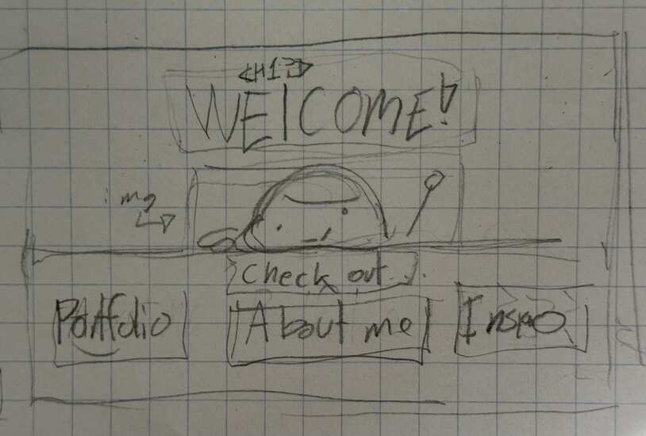
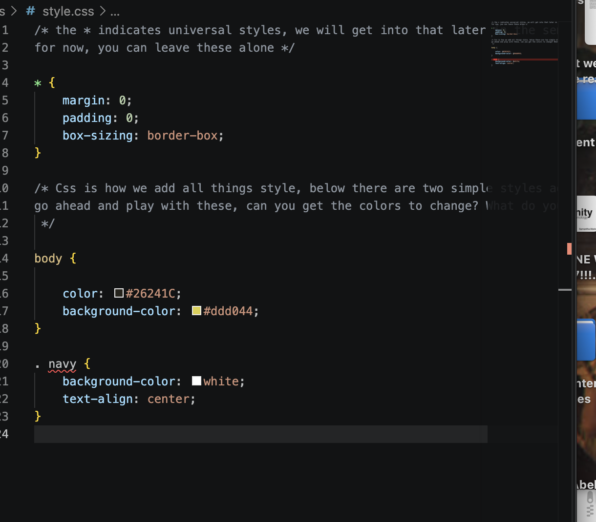
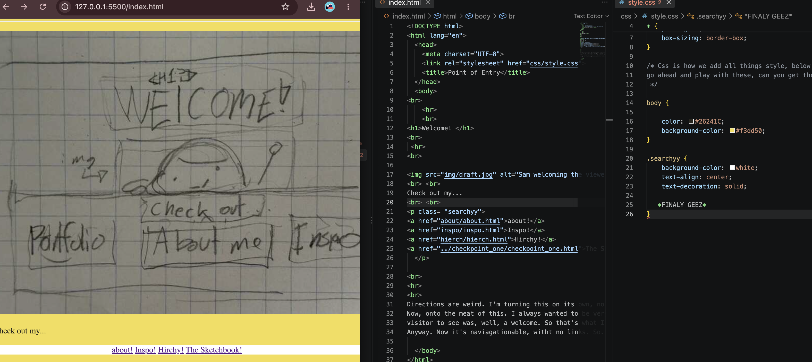

pray I got these instructions right, but whatever.
this one. Again. Look a gif. I wanted to add a gif oringally, but the "digital portrait" called for a video.
So here. Am I supposed to reflect here?
I feel like I'm supposed to.

Amazing. Here's also the draft thing from earlier... that's also on the main page.
Anyway, Copy and paste is REALLY a man's best friend, and it indeed does save one's behind. Links were a bit tedious, but with a bit of trial and error,
I think I got it down just fine. One you get it right, it's smooth sailing from there. Finally connecting everything via links was really rewarding upon completion.
If you noticed with naviagting, for once, the navigations thing is now at the top for this page.
I figured because my page is a strong growing child, I would put it on top so it wouldn't get lost.
I had a moment where I just clicked through everything. Lovely. Can't wait to decorate everything up. Actually nice buttons would be quite nice. At least I hope I get the chance to.
Also I'm gonna connect this to the homepage.
Sept 23, 2026
I can't tell if I hate CSS, or I just need more time. Probably the latter. Now, I did a bit more than
just the navigation (ex. turning the) background universally yellow. Just really wanted to do that. I liked the
idea of the navigaiton being white because of it. It's light, contrasts, and just looks nice. I'll make them buttons eventually.
Probably during revision!
Lots of copy and pasting for uniformity. I just wanted it to look nice. I think it made it a bit more nice.
I think that simple sprucing definetely changed the experience, making it feel more... nice? Welcoming?
Kind of like walking into a friend's house and seeing it clean. You know?
I connected the main CSS to everything. Seemed to work! Anyway, I'm gonna lie down. Check out my failures and successes.


Sept 29, 2026
Guess who forgot to take screenshots the entire time... ME. Anyway, I wanted my site simple and sweet.
So with that, everything content-wise stayed the same. Nothing added (besides the nav) and nothing removed.
I also took away the serif font. Didn't likey. Never really did, honestly. I think for the sake of navigation, I might just copy a version of it, and slap it
under the notes, so I easily retrieve it and edit as needed. For efficency sake. I think things are starting to form up, which I'm happy about!
Buttons look cute, might need a bit more padding on the bottom, but we go strong, I think! I heavily relied on W33? WSS? I don't feel like looking. That saved
my behind alongside the lecture demo, which was pretty cool. I feel like I could clean up my coding. That's the biggest issue. If I don't make sure everything is organized,
it's defo going to bite me in the behind very VERY soon. Though for the time being, I got things done.
My naviation works smoothly, I know how to do boxes, and life is good. Until tomorrow.
OCT 12, FlexLab:
I think this may have been the first session in a long time where I understood what was going on, and I think it’s on me. Now anyways, onto the actual meat of this.
I think something I’d like to note is the “Section” class(?) of this assignment. It’s the one that has the flex, and has the margins.
With it, everything in the section class follows what it’s put down.
Images change size, and the text conforms when I shrink or enlarge the page.
Basically, change the box and everything in said box changes. Basically, I got to better understand percentages and responsive design.
A lot of the times when I tried doing it, I forgot to write out a lot of the “text-wrap”, “display”, or really, just the major things and got confused why it never worked; I see now why.
Also somrthing I'm noticing I think is how the images in the lab are inheriting the sizing. I. think? I'm seeing it change size, just like the text.
Can't be from the article images-- it's only showing background color. I think it's coming from both section and article CSS tags. Cool.
General post,
OCT 13
4:49. I cannot believe this. After weeks (?) of STRUGGLING to get my sites to all work, I decided to check in on this one, it’s finally working. Unassisted . It just did that. I’m immensely happy, but god. I’m pissed at the same time. Not sure what to put as a reflection here. I don’t know what fixed it, I don’t know why it decided to be normal– all I know is that it did.
9:17. Okay. For some reason, my CSS is gone. Should be an easy fix.
12:20 I’m gonna commit it now. I had to fiddle with adding new stuff and also changing up the nav so it’s consistent.
If it crashes, so help me god.
Seen below: happy lil accident.
8:10PM no clue.
I guess while all that's going, I'm going to go over a basic recap of everything so far.
1. REWORKED NAVIGATION!
I spruced it up alot. I decided on staying consistent wih my style. The white bar I've had for the longest time was probably the
biggest change. Instead of the usual "lets put some pixels down", I changed it to percentages. That was fine, a bit, until I had to hande the text in it. I think it was mentioned last
session was that when something is in a box, the percentages are the pecentaging the box(?). I saw that first hand I think. Quite odd, but adjusted as needed.
2. Flex-boxes.
I spruced out more of my site. Aligning, yadaydah yadah. I think the biggest thing I paid most attention to were to responsive elements.
Basically how things change as it moves. I've found I, once again, had to pay attention to percentages again. Also I'm finding writing out the extras (that being
wrap, no-wrap, alignment, and extras)
3. CLASSES.
Real life-savers. put the right class on what you want, and don't have to deal with it again. Straight forward. I don't know what else to say.
4. TROUBLESHOOTING.
As it was apparent for what felt like several weeks, my sites didn't work. I did all sorts of things.
The basic 'lets just rewrite it and make it back to normal', 'check with a peer', 'check with the professor', ALMOST 'check online', and also drastic things Like
removing the file and putting it back in (BAD BAD BAD IDEA LEARNED HARD WAY). EVERYTHING. Then literally aroud 5 AM (Don't ask), I found it worked like butter.
No clue what happened. Though my 'fix' is this:
I deleted the orignal nav system I had there. Then committed. Then replaced it with another working nav from a working page. Commit. Sleep. Wake. Check site... profit???
I literally couldn't tell you what caused the fix. But then I had to add extra stuff again. Pray it doesn't crash again.
5. FUTURE PLANS AND CURRENT THOUGHTS?.
I think what I have is solid layout-wise. Though I think mine, despite the sprucing up, it's quite... plain? Sure, I did
say I wanted things to be simple and efficent. I did just that. But I think a column or two would spice things up quite nice. I don't think
this will reflect onto my page by the time I'm done, considering my luck with Github. Seriously. Though how we stand: our page is responsive, should meet criteria, and is
pretty candid, maybe too much so, regarding the process.
October 14 12:31
What was I on last night. Made section a . class? For what? Fixed. Now it's normal-- no clue what I was thinking.
Oct 19: We’re back again.
I’ve recently figured out WHY my things haven’t loaded and what stunted my things for the site– I hate to press push origin. All that waiting for nothing. Anyway, more things I’ve done and to note of:
Section Reworks
I wanted columns for ease, and I’ve been desperate to make it so since we did the lab. Turns out I needed to rework my things because I needed the “section tag”. Rewrote the code and got it to how I want it.
ISSUES AT HAND Centering Issues
Can’t figure out how to center content. Advice hasn’t worked. Align everything (I’ve gone through the options– self, justify, content, items, etc). Seems to not work with display flex articles/sections/boxes? Yet to figure out, but at least the aesthetic is down.
Solution? More scouring around. I have some resources saved. Maybe that’ll do it?
10:30: RUMORS ASSIGNMENT
I’ve realized that I never really wrote about this! I thought I did, but it seems I haven’t. I know we did most if not all of it in class, and that it’s been a hot minute, so I hope this reflection really is something. I remembered everything being pretty much smooth sailing in class, but what I remember noting that the most notable things that I remembered while working on this came from the
tags, where I had to fiddle with the percentages to watch the reference image myself. It took a few tries, but I managed to get it to size. I’ve noticed over the course of using percentages, they’re usually in the single digits, usually in the 1-5% range interestingly enough. Little goes a long way.
ISSUES
I think the biggest thing is needing to get into the habit of stating direction,
alignment, wrap, and so on. When I initially started working with flex boxes, I forgot about this,
and a lot of my things were either janky, or didn’t work because of it.
Also I can’t for the life of me figure out how to center things.
Not a massive issue in the context of this assignment,
but an issue is still an issue however you run it.